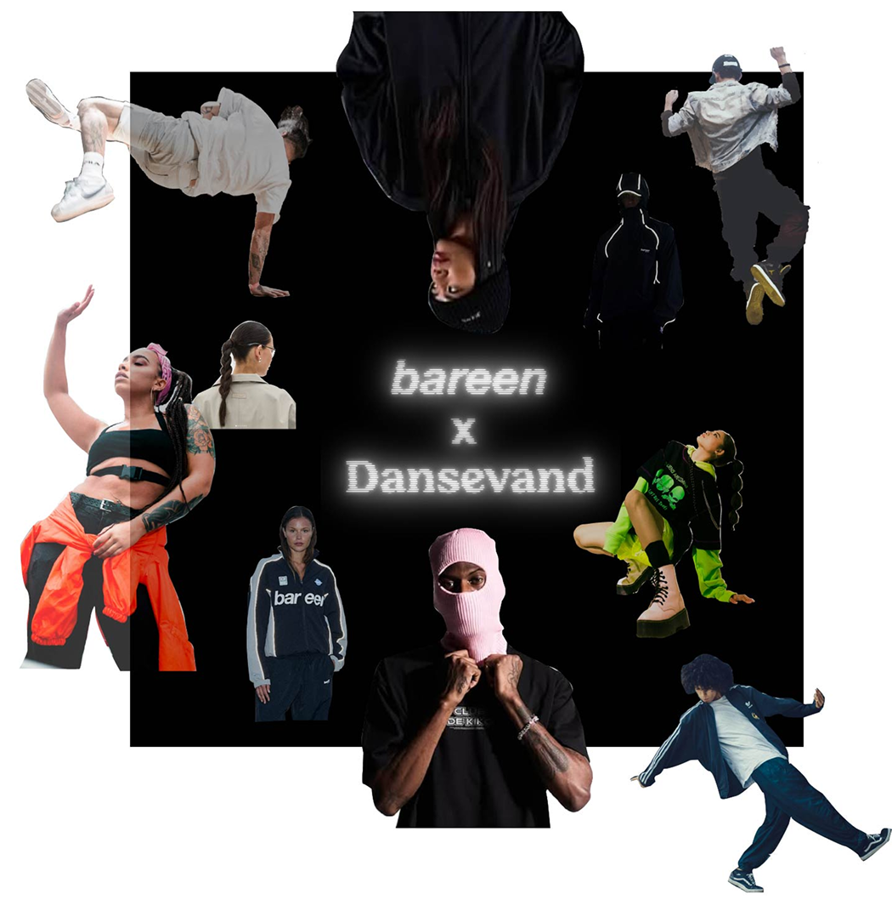
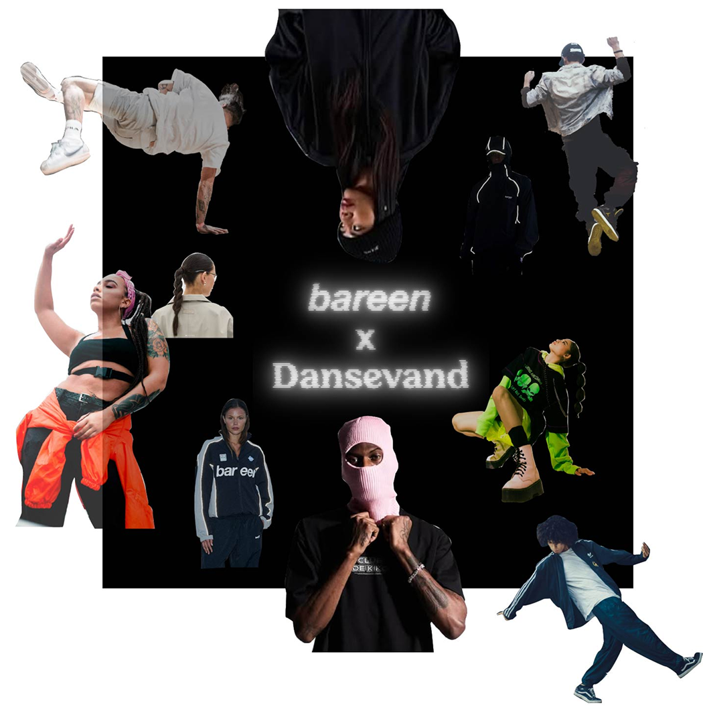

- Illustrations
- Interaktiv game design
- UX/UI
- Code
I specialise in brand design and visual storytelling through graphic design, illustration, collage, and motion. With a background in brand and marketing, I bring ideas to life through visuals that move, connect, and make an impact.
CAMILLA
BAUMGARTEN
- CAMPAIGN
- ILLUSTRATION & COLLAGE
- UX/UI
- SOME CONTENT


 

- Illustrations
- Website
- UX/UI
- Animations

- Visual content
- Campaign


- Motion Graphics
- Art Direction
- Illustrations
*Case assignment